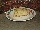
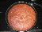

Welcome to Sreerekha's Home Page
Menu
Home
Bakery
Snacks
Sweets
Guest Book
My Baking Creations - 2008-09
 Walnut Coffee Cake - 15 Jun 2011 '/>
Walnut Coffee Cake - 15 Jun 2011 '/>
Choco nochip cookies '/>
Peanut butter cookies - Another of my lil boys favourite cookie ! Easy to make and good to eat ! you can find the recipe
here
'/>
Chocolate Pudding - One of my lil boys favourite . The recipe is as follows :
INGRIDIENTS :
2 beaten eggs
2 cups milk
3 tsp cocoa powder
1/2 tsp vanilla essence
4 tbsp powdered sugar
METHOD :
Mix all the ingridients except the eggs and microwave at max power ( 900 W) for 6-7 mins
Now add the beaten eggs and microwave at 60% power for 4 mins
Leave it to cool and refrigerate it
Garnish with cream and fruits as per your choice !
Serve chilled !
Note: You can also create this by steaming the mixture on a low flame for 10-12 mins after mixing all ingridients properly ! in case you dont want to use microwave for it! . '/>
Carrot Apple Healthy cake - I really like this cake because it is a healthy version of normal cakes which are heavy on the butter usage . I was actually trying to make muffins for my son so that he can carry them to school or snack on them in the evenings with his glass of milk.. but for some reason could not find a muffin mould in the locality .. after repeated attempts decided to make it like a regular cake . I am yet to fine tune the baking time to make it more moist and soft ! The RECIPE is posted below for your perusal:
INGRIDIENTS :
1 apple grated
1cup carrot grated
1 cup flour
1/2 cup oatmeal flour
1 tsp oil
1/2 tsp vanilla essense
1 beaten egg
1/2 tsp baking powder
1/2 tsp baking soda
1cup sugar
1 tsp cinnamon powder
METHOD:
Mix all the ingridients together .
Grease the cake/muffin mould .
Fill to half and garnish with fruits and nuts ( I used dates and raisins in my cake) and put the mould in a preheated oven to 180 degrees C for 20 mins !'/>
CAH cake Slice'/>
 Banana Bread - I found this recipe on the
internet
and except for the shape of the mould it did work to my best interest ! This was my first baking attempt in a looong long time now :) hence captured the memory !'/>
Banana Bread'/>
Copyright © 2009
Sreerekha
| All Rights Reserved
{kind=link}
{kind=link}
{kind=link}
{kind=link}
![Chocolate Pudding - One of my lil boys favourite . The recipe is as follows : INGRIDIENTS : 2 beaten eggs2 cups milk 3 tsp cocoa powder1/2 tsp vanilla essence 4 tbsp powdered sugar METHOD : Mix all the ingridients except the eggs and microwave at max power ( 900 W) for 6-7 minsNow add the beaten eggs and microwave at 60% power for 4 mins Leave it to cool and refrigerate it Garnish with cream and fruits as per your choice ! Serve chilled ! Note: You can also create this by steaming the mixture on a low flame for 10-12 mins after mixing all ingridients properly ! in case you dont want to use microwave for it! . '/>](images/bakery/2009_Jul_Chocolate_Pudding_1.JPG){kind=link}
![Carrot Apple Healthy cake - I really like this cake because it is a healthy version of normal cakes which are heavy on the butter usage . I was actually trying to make muffins for my son so that he can carry them to school or snack on them in the evenings with his glass of milk.. but for some reason could not find a muffin mould in the locality .. after repeated attempts decided to make it like a regular cake . I am yet to fine tune the baking time to make it more moist and soft ! The RECIPE is posted below for your perusal: INGRIDIENTS : 1 apple grated 1cup carrot grated 1 cup flour 1/2 cup oatmeal flour 1 tsp oil 1/2 tsp vanilla essense 1 beaten egg 1/2 tsp baking powder 1/2 tsp baking soda 1cup sugar 1 tsp cinnamon powder METHOD: Mix all the ingridients together .Grease the cake/muffin mould .Fill to half and garnish with fruits and nuts ( I used dates and raisins in my cake) and put the mould in a preheated oven to 180 degrees C for 20 mins !'/>](images/bakery/2009_Jul_Carrot_Apple_Healthy_cake.JPG){kind=link}
{kind=link}
{kind=link}
{kind=link}